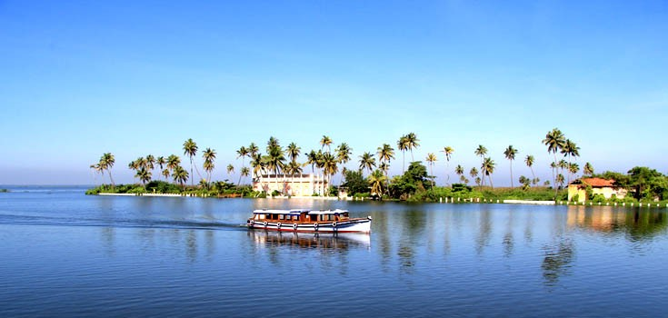
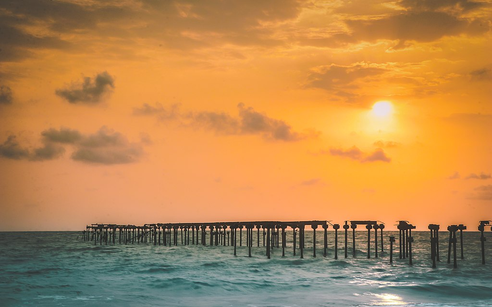

Pathiramanal
The legend says that the island called Pathiramannal is formed when Vilwamangalath Swamiyaar, an ardont devotee of Lord Krishna wanted to do his evening rituals, the lake had made way for the land rising from below for him. This small biodiversity is a paradise for many migratory birds and is located between Thanneermukkam and Kumarakom. It is only accessible through water.

R-Block
These regions are wonders of the indigenous agricultural engineering know-how of Kerala and remind the visitor of the famous dikes of Holland. Extensive areas of Land have been reclaimed from the backwaters and are protected by dikes built all around . Here cultivation and habitation are made possible four to ten feet below Sea Level. A leisurely cruise along the Canals that surround these Kayals is a memorable experience.

Alappuzha Beach
This is one of the most popular picnic spots in Alappuzha. The pier, which extends into the sea here, is over 137 years old. Entertainment facilities at the Vijaya Beach Park add to the attractions of the beach. There is also an old light house which is greatly fascinating to visitors.
